Exercise 1： Let CBEA be a trapezoid with BE//CA and BE=2CA. F is the midpoint of ED. CD=BC. Prove that AF⊥BD.
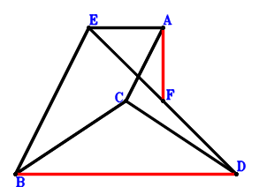
\(\because \) BE//CA and BE=2CA \(\therefore \small\overrightarrow{DE}=2 \small\overrightarrow{DA} + \small\overrightarrow{DB} - 2 \small\overrightarrow{DC}\).\(\because \) F is the midpoint of ED \(\therefore \small\overrightarrow{DF}=\dfrac{\small\overrightarrow{DE}}{2}=\small\overrightarrow{DA} + \dfrac{\small\overrightarrow{DB}}{2} - \small\overrightarrow{DC}\).\(\because \) CD=BC \( \therefore- \small\overrightarrow{BC}^{2} + \small\overrightarrow{DC}^{2}=\small\overrightarrow{DC}^{2} - \left(- \small\overrightarrow{DB} + \small\overrightarrow{DC}\right)^{2}=- \small\overrightarrow{DB}^{2} + 2 \small\overrightarrow{DB} \cdot \small\overrightarrow{DC}=0.\)In conclusion, \(\small\overrightarrow{BD} \cdot \small\overrightarrow{FA}=- \small\overrightarrow{DB} \cdot \left(\small\overrightarrow{DA} - \small\overrightarrow{DF}\right)=- \small\overrightarrow{DB} \cdot \left(- \dfrac{\small\overrightarrow{DB}}{2} + \small\overrightarrow{DC}\right)=\dfrac{\small\overrightarrow{DB}^{2}}{2} - \small\overrightarrow{DB} \cdot \small\overrightarrow{DC}=0\), that is, AF⊥BD.
Exercise 10： Let E be the midpoint of BD. F is the midpoint of CA and EG. CD=BC. Prove that GA⊥BD.
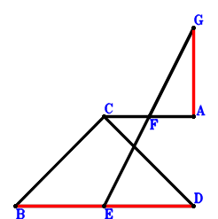
\(\because \) E is the midpoint of BD \(\therefore \small\overrightarrow{DE}=\dfrac{\small\overrightarrow{DB}}{2}\).\(\because \) F is the midpoint of CA \(\therefore \small\overrightarrow{DF}=\dfrac{\small\overrightarrow{DA}}{2} + \dfrac{\small\overrightarrow{DC}}{2}\).\(\because \) F is the midpoint of EG \(\therefore \small\overrightarrow{DG}=\small\overrightarrow{DA} + \small\overrightarrow{DC} - \small\overrightarrow{DE}=\small\overrightarrow{DA} - \dfrac{\small\overrightarrow{DB}}{2} + \small\overrightarrow{DC}\).\(\because \) CD=BC \( \therefore- \small\overrightarrow{BC}^{2} + \small\overrightarrow{DC}^{2}=\small\overrightarrow{DC}^{2} - \left(- \small\overrightarrow{DB} + \small\overrightarrow{DC}\right)^{2}=- \small\overrightarrow{DB}^{2} + 2 \small\overrightarrow{DB} \cdot \small\overrightarrow{DC}=0.\)In conclusion, \(\small\overrightarrow{AG} \cdot \small\overrightarrow{BD}=- \small\overrightarrow{DB} \cdot \left(- \small\overrightarrow{DA} + \small\overrightarrow{DG}\right)=- \small\overrightarrow{DB} \cdot \left(- \dfrac{\small\overrightarrow{DB}}{2} + \small\overrightarrow{DC}\right)=\dfrac{\small\overrightarrow{DB}^{2}}{2} - \small\overrightarrow{DB} \cdot \small\overrightarrow{DC}=0\), that is, GA⊥BD.
Exercise 12： Let CBDF be a trapezoid with BD//CF and BD=2CF. E is the midpoint of GF and AD. CD=BC. Prove that AG⊥BD.
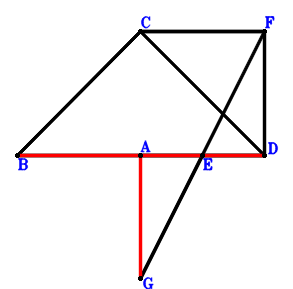
\(\because \) E is the midpoint of AD \(\therefore \small\overrightarrow{DE}=\dfrac{\small\overrightarrow{DA}}{2}\).\(\because \) BD//CF and BD=2CF \(\therefore \small\overrightarrow{DF}=- \dfrac{\small\overrightarrow{DB}}{2} + \small\overrightarrow{DC}\).\(\because \) E is the midpoint of GF \(\therefore \small\overrightarrow{DG}=\small\overrightarrow{DA} - \small\overrightarrow{DF}=\small\overrightarrow{DA} + \dfrac{\small\overrightarrow{DB}}{2} - \small\overrightarrow{DC}\).\(\because \) CD=BC \( \therefore- \small\overrightarrow{BC}^{2} + \small\overrightarrow{DC}^{2}=\small\overrightarrow{DC}^{2} - \left(- \small\overrightarrow{DB} + \small\overrightarrow{DC}\right)^{2}=- \small\overrightarrow{DB}^{2} + 2 \small\overrightarrow{DB} \cdot \small\overrightarrow{DC}=0.\)In conclusion, \(\small\overrightarrow{BD} \cdot \small\overrightarrow{GA}=- \small\overrightarrow{DB} \cdot \left(\small\overrightarrow{DA} - \small\overrightarrow{DG}\right)=- \small\overrightarrow{DB} \cdot \left(- \dfrac{\small\overrightarrow{DB}}{2} + \small\overrightarrow{DC}\right)=\dfrac{\small\overrightarrow{DB}^{2}}{2} - \small\overrightarrow{DB} \cdot \small\overrightarrow{DC}=0\), that is, AG⊥BD.
Exercise 18： Let CAED be a parallelogram. ABDF is a trapezoid with BD//AF and BD=2AF. CD=BC. Prove that FE⊥BD.
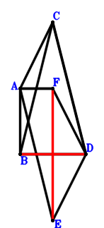
\(\because \) CAED is a parallelogram \(\therefore \small\overrightarrow{DE}=\small\overrightarrow{DA} - \small\overrightarrow{DC}\).\(\because \) BD//AF and BD=2AF \(\therefore \small\overrightarrow{DF}=\small\overrightarrow{DA} - \dfrac{\small\overrightarrow{DB}}{2}\).\(\because \) CD=BC \( \therefore- \small\overrightarrow{BC}^{2} + \small\overrightarrow{DC}^{2}=\small\overrightarrow{DC}^{2} - \left(- \small\overrightarrow{DB} + \small\overrightarrow{DC}\right)^{2}=- \small\overrightarrow{DB}^{2} + 2 \small\overrightarrow{DB} \cdot \small\overrightarrow{DC}=0.\)In conclusion, \(\small\overrightarrow{BD} \cdot \small\overrightarrow{EF}=- \small\overrightarrow{DB} \cdot \left(- \small\overrightarrow{DE} + \small\overrightarrow{DF}\right)=- \small\overrightarrow{DB} \cdot \left(- \dfrac{\small\overrightarrow{DB}}{2} + \small\overrightarrow{DC}\right)=\dfrac{\small\overrightarrow{DB}^{2}}{2} - \small\overrightarrow{DB} \cdot \small\overrightarrow{DC}=0\), that is, FE⊥BD.
Exercise 24： Let CEFD be a parallelogram. EBDA is a trapezoid with BD//EA and BD=2EA. CD=BC. Prove that AF⊥BD.
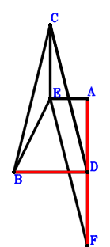
\(\because \) BD//EA and BD=2EA \(\therefore \small\overrightarrow{DE}=\small\overrightarrow{DA} + \dfrac{\small\overrightarrow{DB}}{2}\).\(\because \) CEFD is a parallelogram \(\therefore \small\overrightarrow{DF}=\small\overrightarrow{DA} + \dfrac{\small\overrightarrow{DB}}{2} - \small\overrightarrow{DC}\).\(\because \) CD=BC \( \therefore- \small\overrightarrow{BC}^{2} + \small\overrightarrow{DC}^{2}=\small\overrightarrow{DC}^{2} - \left(- \small\overrightarrow{DB} + \small\overrightarrow{DC}\right)^{2}=- \small\overrightarrow{DB}^{2} + 2 \small\overrightarrow{DB} \cdot \small\overrightarrow{DC}=0.\)In conclusion, \(\small\overrightarrow{BD} \cdot \small\overrightarrow{FA}=- \small\overrightarrow{DB} \cdot \left(\small\overrightarrow{DA} - \small\overrightarrow{DF}\right)=- \small\overrightarrow{DB} \cdot \left(- \dfrac{\small\overrightarrow{DB}}{2} + \small\overrightarrow{DC}\right)=\dfrac{\small\overrightarrow{DB}^{2}}{2} - \small\overrightarrow{DB} \cdot \small\overrightarrow{DC}=0\), that is, AF⊥BD.
Exercise 30： Let BCDE be a trapezoid with BE//CD and BE=2CD. EDAF is a trapezoid with DE//AF and DE=2AF. CD=BC. Prove that AF⊥BD.
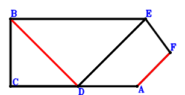
\(\because \) BE//CD and BE=2CD \(\therefore \small\overrightarrow{DE}=\small\overrightarrow{DB} - 2 \small\overrightarrow{DC}\).\(\because \) DE//AF and DE=2AF \(\therefore \small\overrightarrow{DF}=\small\overrightarrow{DA} + \dfrac{\small\overrightarrow{DE}}{2}=\small\overrightarrow{DA} + \dfrac{\small\overrightarrow{DB}}{2} - \small\overrightarrow{DC}\).\(\because \) CD=BC \( \therefore- \small\overrightarrow{BC}^{2} + \small\overrightarrow{DC}^{2}=\small\overrightarrow{DC}^{2} - \left(- \small\overrightarrow{DB} + \small\overrightarrow{DC}\right)^{2}=- \small\overrightarrow{DB}^{2} + 2 \small\overrightarrow{DB} \cdot \small\overrightarrow{DC}=0.\)In conclusion, \(\small\overrightarrow{BD} \cdot \small\overrightarrow{FA}=- \small\overrightarrow{DB} \cdot \left(\small\overrightarrow{DA} - \small\overrightarrow{DF}\right)=- \small\overrightarrow{DB} \cdot \left(- \dfrac{\small\overrightarrow{DB}}{2} + \small\overrightarrow{DC}\right)=\dfrac{\small\overrightarrow{DB}^{2}}{2} - \small\overrightarrow{DB} \cdot \small\overrightarrow{DC}=0\), that is, AF⊥BD.
Exercise 34： Let CEFA be a parallelogram. E is the midpoint of BD. CD=BC. Prove that AF⊥BD.
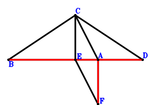
\(\because \) E is the midpoint of BD \(\therefore \small\overrightarrow{DE}=\dfrac{\small\overrightarrow{DB}}{2}\).\(\because \) CEFA is a parallelogram \(\therefore \small\overrightarrow{DF}=\small\overrightarrow{DA} + \dfrac{\small\overrightarrow{DB}}{2} - \small\overrightarrow{DC}\).\(\because \) CD=BC \( \therefore- \small\overrightarrow{BC}^{2} + \small\overrightarrow{DC}^{2}=\small\overrightarrow{DC}^{2} - \left(- \small\overrightarrow{DB} + \small\overrightarrow{DC}\right)^{2}=- \small\overrightarrow{DB}^{2} + 2 \small\overrightarrow{DB} \cdot \small\overrightarrow{DC}=0.\)In conclusion, \(\small\overrightarrow{BD} \cdot \small\overrightarrow{FA}=- \small\overrightarrow{DB} \cdot \left(\small\overrightarrow{DA} - \small\overrightarrow{DF}\right)=- \small\overrightarrow{DB} \cdot \left(- \dfrac{\small\overrightarrow{DB}}{2} + \small\overrightarrow{DC}\right)=\dfrac{\small\overrightarrow{DB}^{2}}{2} - \small\overrightarrow{DB} \cdot \small\overrightarrow{DC}=0\), that is, AF⊥BD.
Exercise 43： Let CBDE be a trapezoid with BD//CE and BD=2CE. CD=BC. Prove that BD⊥DE.
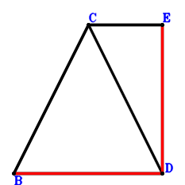
\(\because \) BD//CE and BD=2CE \(\therefore \small\overrightarrow{DE}=- \dfrac{\small\overrightarrow{DB}}{2} + \small\overrightarrow{DC}\).\(\because \) CD=BC \( \therefore- \small\overrightarrow{BC}^{2} + \small\overrightarrow{DC}^{2}=\small\overrightarrow{DC}^{2} - \left(- \small\overrightarrow{DB} + \small\overrightarrow{DC}\right)^{2}=- \small\overrightarrow{DB}^{2} + 2 \small\overrightarrow{DB} \cdot \small\overrightarrow{DC}=0.\)In conclusion, \(- \small\overrightarrow{DB} \cdot \small\overrightarrow{DE}=- \small\overrightarrow{DB} \cdot \left(- \dfrac{\small\overrightarrow{DB}}{2} + \small\overrightarrow{DC}\right)=\dfrac{\small\overrightarrow{DB}^{2}}{2} - \small\overrightarrow{DB} \cdot \small\overrightarrow{DC}=0\), that is, BD⊥DE.
Exercise 52： Let ACDE be a parallelogram. ABFE is a trapezoid with BF//AE and BF=2AE. CD=CB. Prove that BD⊥DF.
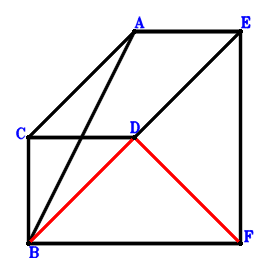
\(\because \) ACDE is a parallelogram \(\therefore \small\overrightarrow{DE}=\small\overrightarrow{DA} - \small\overrightarrow{DC}\).\(\because \) BF//AE and BF=2AE \(\therefore \small\overrightarrow{DF}=- 2 \small\overrightarrow{DA} + \small\overrightarrow{DB} + 2 \small\overrightarrow{DE}=\small\overrightarrow{DB} - 2 \small\overrightarrow{DC}\).\(\because \) CD=CB \( \therefore- \small\overrightarrow{BC}^{2} + \small\overrightarrow{DC}^{2}=\small\overrightarrow{DC}^{2} - \left(- \small\overrightarrow{DB} + \small\overrightarrow{DC}\right)^{2}=- \small\overrightarrow{DB}^{2} + 2 \small\overrightarrow{DB} \cdot \small\overrightarrow{DC}=0.\)In conclusion, \(\small\overrightarrow{DB} \cdot \small\overrightarrow{DF}=\small\overrightarrow{DB} \cdot \left(\small\overrightarrow{DB} - 2 \small\overrightarrow{DC}\right)=\small\overrightarrow{DB}^{2} - 2 \small\overrightarrow{DB} \cdot \small\overrightarrow{DC}=0\), that is, BD⊥DF.
Exercise 57： Let ECAD be a trapezoid with DE//AC and DE=2AC. EBAF is a trapezoid with BE//AF and BE=2AF. CD=BC. Prove that BD⊥DF.
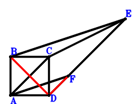
\(\because \) DE//AC and DE=2AC \(\therefore \small\overrightarrow{DE}=- 2 \small\overrightarrow{DA} + 2 \small\overrightarrow{DC}\).\(\because \) BE//AF and BE=2AF \(\therefore \small\overrightarrow{DF}=\small\overrightarrow{DA} - \dfrac{\small\overrightarrow{DB}}{2} + \dfrac{\small\overrightarrow{DE}}{2}=- \dfrac{\small\overrightarrow{DB}}{2} + \small\overrightarrow{DC}\).\(\because \) CD=BC \( \therefore- \small\overrightarrow{BC}^{2} + \small\overrightarrow{DC}^{2}=\small\overrightarrow{DC}^{2} - \left(- \small\overrightarrow{DB} + \small\overrightarrow{DC}\right)^{2}=- \small\overrightarrow{DB}^{2} + 2 \small\overrightarrow{DB} \cdot \small\overrightarrow{DC}=0.\)In conclusion, \(- \small\overrightarrow{DB} \cdot \small\overrightarrow{DF}=- \small\overrightarrow{DB} \cdot \left(- \dfrac{\small\overrightarrow{DB}}{2} + \small\overrightarrow{DC}\right)=\dfrac{\small\overrightarrow{DB}^{2}}{2} - \small\overrightarrow{DB} \cdot \small\overrightarrow{DC}=0\), that is, BD⊥DF.
Exercise 62： Let ECFA be a parallelogram. EBDA is a trapezoid with BD//EA and BD=2EA. CD=BC. Prove that BD⊥DF.
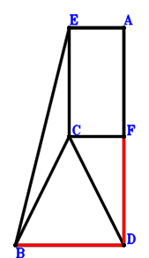
\(\because \) BD//EA and BD=2EA \(\therefore \small\overrightarrow{DE}=\small\overrightarrow{DA} + \dfrac{\small\overrightarrow{DB}}{2}\).\(\because \) ECFA is a parallelogram \(\therefore \small\overrightarrow{DF}=\small\overrightarrow{DA} + \small\overrightarrow{DC} - \small\overrightarrow{DE}=- \dfrac{\small\overrightarrow{DB}}{2} + \small\overrightarrow{DC}\).\(\because \) CD=BC \( \therefore- \small\overrightarrow{BC}^{2} + \small\overrightarrow{DC}^{2}=\small\overrightarrow{DC}^{2} - \left(- \small\overrightarrow{DB} + \small\overrightarrow{DC}\right)^{2}=- \small\overrightarrow{DB}^{2} + 2 \small\overrightarrow{DB} \cdot \small\overrightarrow{DC}=0.\)In conclusion, \(- \small\overrightarrow{DB} \cdot \small\overrightarrow{DF}=- \small\overrightarrow{DB} \cdot \left(- \dfrac{\small\overrightarrow{DB}}{2} + \small\overrightarrow{DC}\right)=\dfrac{\small\overrightarrow{DB}^{2}}{2} - \small\overrightarrow{DB} \cdot \small\overrightarrow{DC}=0\), that is, BD⊥DF.
Exercise 209： Let EBDA be a trapezoid with BD//EA and BD=2EA. BD⊥DA. CD=BC. Prove that EC⊥BD.
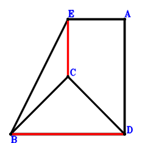
\(\because \) BD//EA and BD=2EA \(\therefore \small\overrightarrow{DE}=\small\overrightarrow{DA} + \dfrac{\small\overrightarrow{DB}}{2}\).\(\because \) CD=BC \(\therefore - \small\overrightarrow{BC}^{2} + \small\overrightarrow{DC}^{2}=\small\overrightarrow{DC}^{2} - \left(- \small\overrightarrow{DB} + \small\overrightarrow{DC}\right)^{2}=- \small\overrightarrow{DB}^{2} + 2 \small\overrightarrow{DB} \cdot \small\overrightarrow{DC}=0\) . . . . . . \(①\)\(\because \) BD⊥DA \(\therefore \small\overrightarrow{DA} \cdot \small\overrightarrow{DB}=0\) . . . . . . \(②\)In conclusion, \(\small\overrightarrow{BD} \cdot \small\overrightarrow{EC}=- \small\overrightarrow{DB} \cdot \left(\small\overrightarrow{DC} - \small\overrightarrow{DE}\right)=- \small\overrightarrow{DB} \cdot \left(- \small\overrightarrow{DA} - \dfrac{\small\overrightarrow{DB}}{2} + \small\overrightarrow{DC}\right)=\small\overrightarrow{DA} \cdot \small\overrightarrow{DB} + \dfrac{\small\overrightarrow{DB}^{2}}{2} - \small\overrightarrow{DB} \cdot \small\overrightarrow{DC}=-1/2\cdot①+②=0\), that is, EC⊥BD.
Exercise 213： Let B, E, A be collinear and BE=3EA. F, E are the midpoints of DA, GF, respectively. BD⊥DA. CD=BC. Prove that CG⊥BD.
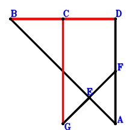
\(\because \) B, E, A are collinear and BE=3EA \(\therefore \small\overrightarrow{DE}=\dfrac{3 \small\overrightarrow{DA}}{4} + \dfrac{\small\overrightarrow{DB}}{4}\).\(\because \) F is the midpoint of DA \(\therefore \small\overrightarrow{DF}=\dfrac{\small\overrightarrow{DA}}{2}\).\(\because \) E is the midpoint of GF \(\therefore \small\overrightarrow{DG}=- \dfrac{\small\overrightarrow{DA}}{2} + 2 \small\overrightarrow{DE}=\small\overrightarrow{DA} + \dfrac{\small\overrightarrow{DB}}{2}\).\(\because \) CD=BC \(\therefore - \small\overrightarrow{BC}^{2} + \small\overrightarrow{DC}^{2}=\small\overrightarrow{DC}^{2} - \left(- \small\overrightarrow{DB} + \small\overrightarrow{DC}\right)^{2}=- \small\overrightarrow{DB}^{2} + 2 \small\overrightarrow{DB} \cdot \small\overrightarrow{DC}=0\) . . . . . . \(①\)\(\because \) BD⊥DA \(\therefore \small\overrightarrow{DA} \cdot \small\overrightarrow{DB}=0\) . . . . . . \(②\)In conclusion, \(\small\overrightarrow{BD} \cdot \small\overrightarrow{GC}=- \small\overrightarrow{DB} \cdot \left(\small\overrightarrow{DC} - \small\overrightarrow{DG}\right)=- \small\overrightarrow{DB} \cdot \left(- \small\overrightarrow{DA} - \dfrac{\small\overrightarrow{DB}}{2} + \small\overrightarrow{DC}\right)=\small\overrightarrow{DA} \cdot \small\overrightarrow{DB} + \dfrac{\small\overrightarrow{DB}^{2}}{2} - \small\overrightarrow{DB} \cdot \small\overrightarrow{DC}=-1/2\cdot①+②=0\), that is, CG⊥BD.
Exercise 217： Let E, F be the midpoints of BA, AD, respectively. G is the midpoint of HA and CF. BD⊥DA. CD=BC. Prove that EH⊥BD.
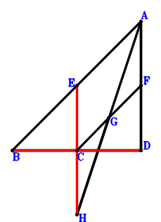
\(\because \) E is the midpoint of BA \(\therefore \small\overrightarrow{DE}=\dfrac{\small\overrightarrow{DA}}{2} + \dfrac{\small\overrightarrow{DB}}{2}\).\(\because \) F is the midpoint of AD \(\therefore \small\overrightarrow{DF}=\dfrac{\small\overrightarrow{DA}}{2}\).\(\because \) G is the midpoint of CF \(\therefore \small\overrightarrow{DG}=\dfrac{\small\overrightarrow{DC}}{2} + \dfrac{\small\overrightarrow{DF}}{2}=\dfrac{\small\overrightarrow{DA}}{4} + \dfrac{\small\overrightarrow{DC}}{2}\).\(\because \) G is the midpoint of HA \(\therefore \small\overrightarrow{DH}=- \small\overrightarrow{DA} + 2 \small\overrightarrow{DG}=- \dfrac{\small\overrightarrow{DA}}{2} + \small\overrightarrow{DC}\).\(\because \) CD=BC \(\therefore - \small\overrightarrow{BC}^{2} + \small\overrightarrow{DC}^{2}=\small\overrightarrow{DC}^{2} - \left(- \small\overrightarrow{DB} + \small\overrightarrow{DC}\right)^{2}=- \small\overrightarrow{DB}^{2} + 2 \small\overrightarrow{DB} \cdot \small\overrightarrow{DC}=0\) . . . . . . \(①\)\(\because \) BD⊥DA \(\therefore \small\overrightarrow{DA} \cdot \small\overrightarrow{DB}=0\) . . . . . . \(②\)In conclusion, \(\small\overrightarrow{BD} \cdot \small\overrightarrow{EH}=- \small\overrightarrow{DB} \cdot \left(- \small\overrightarrow{DE} + \small\overrightarrow{DH}\right)=- \small\overrightarrow{DB} \cdot \left(- \small\overrightarrow{DA} - \dfrac{\small\overrightarrow{DB}}{2} + \small\overrightarrow{DC}\right)=\small\overrightarrow{DA} \cdot \small\overrightarrow{DB} + \dfrac{\small\overrightarrow{DB}^{2}}{2} - \small\overrightarrow{DB} \cdot \small\overrightarrow{DC}=-1/2\cdot①+②=0\), that is, EH⊥BD.
Exercise 221： Let EBDA be a trapezoid with BD//EA and BD=3EA. F, E, A are collinear and FA=3FE. BD⊥DA. CD=BC. Prove that FC⊥BD.
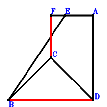
\(\because \) BD//EA and BD=3EA \(\therefore \small\overrightarrow{DE}=\small\overrightarrow{DA} + \dfrac{\small\overrightarrow{DB}}{3}\).\(\because \) F, E, A are collinear and FA=3FE \(\therefore \small\overrightarrow{DF}=- \dfrac{\small\overrightarrow{DA}}{2} + \dfrac{3 \small\overrightarrow{DE}}{2}=\small\overrightarrow{DA} + \dfrac{\small\overrightarrow{DB}}{2}\).\(\because \) CD=BC \(\therefore - \small\overrightarrow{BC}^{2} + \small\overrightarrow{DC}^{2}=\small\overrightarrow{DC}^{2} - \left(- \small\overrightarrow{DB} + \small\overrightarrow{DC}\right)^{2}=- \small\overrightarrow{DB}^{2} + 2 \small\overrightarrow{DB} \cdot \small\overrightarrow{DC}=0\) . . . . . . \(①\)\(\because \) BD⊥DA \(\therefore \small\overrightarrow{DA} \cdot \small\overrightarrow{DB}=0\) . . . . . . \(②\)In conclusion, \(\small\overrightarrow{BD} \cdot \small\overrightarrow{FC}=- \small\overrightarrow{DB} \cdot \left(\small\overrightarrow{DC} - \small\overrightarrow{DF}\right)=- \small\overrightarrow{DB} \cdot \left(- \small\overrightarrow{DA} - \dfrac{\small\overrightarrow{DB}}{2} + \small\overrightarrow{DC}\right)=\small\overrightarrow{DA} \cdot \small\overrightarrow{DB} + \dfrac{\small\overrightarrow{DB}^{2}}{2} - \small\overrightarrow{DB} \cdot \small\overrightarrow{DC}=-1/2\cdot①+②=0\), that is, FC⊥BD.
Exercise 222： Let EBDA be a rectangle. F is the midpoint of EA. CD=BC. Prove that FC⊥BD.
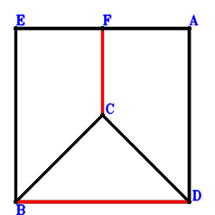
\(\because \) EBDA is a parallelogram \(\therefore \small\overrightarrow{DE}=\small\overrightarrow{DA} + \small\overrightarrow{DB}\).\(\because \) F is the midpoint of EA \(\therefore \small\overrightarrow{DF}=\dfrac{\small\overrightarrow{DA}}{2} + \dfrac{\small\overrightarrow{DE}}{2}=\small\overrightarrow{DA} + \dfrac{\small\overrightarrow{DB}}{2}\).\(\because \) CD=BC \(\therefore - \small\overrightarrow{BC}^{2} + \small\overrightarrow{DC}^{2}=\small\overrightarrow{DC}^{2} - \left(- \small\overrightarrow{DB} + \small\overrightarrow{DC}\right)^{2}=- \small\overrightarrow{DB}^{2} + 2 \small\overrightarrow{DB} \cdot \small\overrightarrow{DC}=0\) . . . . . . \(①\)\(\because \) BD⊥DA \(\therefore \small\overrightarrow{DA} \cdot \small\overrightarrow{DB}=0\) . . . . . . \(②\)In conclusion, \(\small\overrightarrow{BD} \cdot \small\overrightarrow{FC}=- \small\overrightarrow{DB} \cdot \left(\small\overrightarrow{DC} - \small\overrightarrow{DF}\right)=- \small\overrightarrow{DB} \cdot \left(- \small\overrightarrow{DA} - \dfrac{\small\overrightarrow{DB}}{2} + \small\overrightarrow{DC}\right)=\small\overrightarrow{DA} \cdot \small\overrightarrow{DB} + \dfrac{\small\overrightarrow{DB}^{2}}{2} - \small\overrightarrow{DB} \cdot \small\overrightarrow{DC}=-1/2\cdot①+②=0\), that is, FC⊥BD.
Exercise 233： Let ABEF be a parallelogram. ACED is a trapezoid with ED//CA and ED=2CA. BD⊥DA. CD=BC. Prove that AF⊥BD.
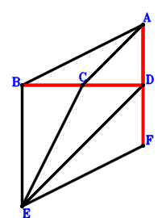
\(\because \) ED//CA and ED=2CA \(\therefore \small\overrightarrow{DE}=- 2 \small\overrightarrow{DA} + 2 \small\overrightarrow{DC}\).\(\because \) ABEF is a parallelogram \(\therefore \small\overrightarrow{DF}=- \small\overrightarrow{DA} - \small\overrightarrow{DB} + 2 \small\overrightarrow{DC}\).\(\because \) CD=BC \(\therefore - \small\overrightarrow{BC}^{2} + \small\overrightarrow{DC}^{2}=\small\overrightarrow{DC}^{2} - \left(- \small\overrightarrow{DB} + \small\overrightarrow{DC}\right)^{2}=- \small\overrightarrow{DB}^{2} + 2 \small\overrightarrow{DB} \cdot \small\overrightarrow{DC}=0\) . . . . . . \(①\)\(\because \) BD⊥DA \(\therefore \small\overrightarrow{DA} \cdot \small\overrightarrow{DB}=0\) . . . . . . \(②\)In conclusion, \(\small\overrightarrow{AF} \cdot \small\overrightarrow{BD}=- \small\overrightarrow{DB} \cdot \left(- \small\overrightarrow{DA} + \small\overrightarrow{DF}\right)=- \small\overrightarrow{DB} \cdot \left(- 2 \small\overrightarrow{DA} - \small\overrightarrow{DB} + 2 \small\overrightarrow{DC}\right)=2 \small\overrightarrow{DA} \cdot \small\overrightarrow{DB} + \small\overrightarrow{DB}^{2} - 2 \small\overrightarrow{DB} \cdot \small\overrightarrow{DC}=-①+2\cdot②=0\), that is, AF⊥BD.
Exercise 234： Let FECA be a trapezoid with FA//EC and FA=2EC. EBDA is a trapezoid with BD//EA and BD=2EA. BD⊥DA. CD=BC. Prove that FA⊥BD.
\(\because \) BD//EA and BD=2EA \(\therefore \small\overrightarrow{DE}=\small\overrightarrow{DA} + \dfrac{\small\overrightarrow{DB}}{2}\).\(\because \) FA//EC and FA=2EC \(\therefore \small\overrightarrow{DF}=\small\overrightarrow{DA} - 2 \small\overrightarrow{DC} + 2 \small\overrightarrow{DE}=3 \small\overrightarrow{DA} + \small\overrightarrow{DB} - 2 \small\overrightarrow{DC}\).\(\because \) CD=BC \(\therefore - \small\overrightarrow{BC}^{2} + \small\overrightarrow{DC}^{2}=\small\overrightarrow{DC}^{2} - \left(- \small\overrightarrow{DB} + \small\overrightarrow{DC}\right)^{2}=- \small\overrightarrow{DB}^{2} + 2 \small\overrightarrow{DB} \cdot \small\overrightarrow{DC}=0\) . . . . . . \(①\)\(\because \) BD⊥DA \(\therefore \small\overrightarrow{DA} \cdot \small\overrightarrow{DB}=0\) . . . . . . \(②\)In conclusion, \(\small\overrightarrow{BD} \cdot \small\overrightarrow{FA}=- \small\overrightarrow{DB} \cdot \left(\small\overrightarrow{DA} - \small\overrightarrow{DF}\right)=- \small\overrightarrow{DB} \cdot \left(- 2 \small\overrightarrow{DA} - \small\overrightarrow{DB} + 2 \small\overrightarrow{DC}\right)=2 \small\overrightarrow{DA} \cdot \small\overrightarrow{DB} + \small\overrightarrow{DB}^{2} - 2 \small\overrightarrow{DB} \cdot \small\overrightarrow{DC}=-①+2\cdot②=0\), that is, FA⊥BD.
Exercise 243： Let ABDE be a parallelogram. ACFE is a trapezoid with AE//CF and AE=2CF. BD⊥DA. CD=BC. Prove that AF⊥BD.
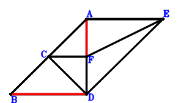
\(\because \) ABDE is a parallelogram \(\therefore \small\overrightarrow{DE}=\small\overrightarrow{DA} - \small\overrightarrow{DB}\).\(\because \) AE//CF and AE=2CF \(\therefore \small\overrightarrow{DF}=- \dfrac{\small\overrightarrow{DA}}{2} + \small\overrightarrow{DC} + \dfrac{\small\overrightarrow{DE}}{2}=- \dfrac{\small\overrightarrow{DB}}{2} + \small\overrightarrow{DC}\).\(\because \) CD=BC \(\therefore - \small\overrightarrow{BC}^{2} + \small\overrightarrow{DC}^{2}=\small\overrightarrow{DC}^{2} - \left(- \small\overrightarrow{DB} + \small\overrightarrow{DC}\right)^{2}=- \small\overrightarrow{DB}^{2} + 2 \small\overrightarrow{DB} \cdot \small\overrightarrow{DC}=0\) . . . . . . \(①\)\(\because \) BD⊥DA \(\therefore \small\overrightarrow{DA} \cdot \small\overrightarrow{DB}=0\) . . . . . . \(②\)In conclusion, \(\small\overrightarrow{AF} \cdot \small\overrightarrow{BD}=- \small\overrightarrow{DB} \cdot \left(- \small\overrightarrow{DA} + \small\overrightarrow{DF}\right)=- \small\overrightarrow{DB} \cdot \left(- \small\overrightarrow{DA} - \dfrac{\small\overrightarrow{DB}}{2} + \small\overrightarrow{DC}\right)=\small\overrightarrow{DA} \cdot \small\overrightarrow{DB} + \dfrac{\small\overrightarrow{DB}^{2}}{2} - \small\overrightarrow{DB} \cdot \small\overrightarrow{DC}=-1/2\cdot①+②=0\), that is, AF⊥BD.
Exercise 245： Let ECAD be a trapezoid with DE//AC and DE=2AC. DB⊥BE. CD=BC. Prove that AD⊥DB.
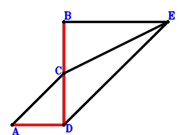
\(\because \) DE//AC and DE=2AC \(\therefore \small\overrightarrow{DE}=- 2 \small\overrightarrow{DA} + 2 \small\overrightarrow{DC}\).\(\because \) CD=BC \(\therefore - \small\overrightarrow{BC}^{2} + \small\overrightarrow{DC}^{2}=\small\overrightarrow{DC}^{2} - \left(- \small\overrightarrow{DB} + \small\overrightarrow{DC}\right)^{2}=- \small\overrightarrow{DB}^{2} + 2 \small\overrightarrow{DB} \cdot \small\overrightarrow{DC}=0\) . . . . . . \(①\)\(\because \) DB⊥BE \(\therefore \small\overrightarrow{BD} \cdot \small\overrightarrow{BE}=- \small\overrightarrow{DB} \cdot \left(- \small\overrightarrow{DB} + \small\overrightarrow{DE}\right)=- \small\overrightarrow{DB} \cdot \left(- 2 \small\overrightarrow{DA} - \small\overrightarrow{DB} + 2 \small\overrightarrow{DC}\right)=2 \small\overrightarrow{DA} \cdot \small\overrightarrow{DB} + \small\overrightarrow{DB}^{2} - 2 \small\overrightarrow{DB} \cdot \small\overrightarrow{DC}=0\) . . . . . . \(②\)In conclusion, \(\small\overrightarrow{DA} \cdot \small\overrightarrow{DB}=1/2\cdot①+1/2\cdot②=0\), that is, AD⊥DB.